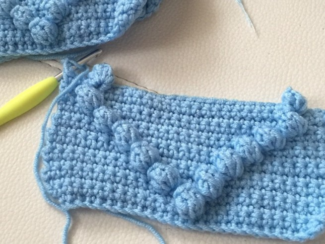
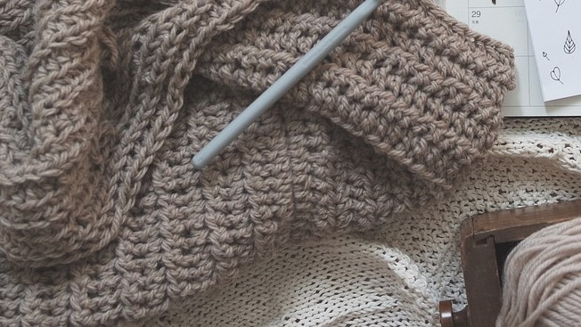
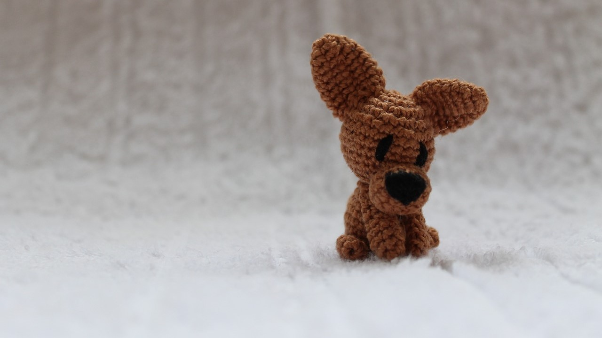

Be 5 Bedste Babyopskrifter
Skab de skønneste projekter til de helt små
ved at hækle en personlig og håndlavede gave.
Disse 5 babyopskrifter kombinerer sødme og funktionalitet:
Babytæppe i Boblemønster:
Et blødt og luftigt tæppe i boblemønster er perfekt til babyens lur. Dette projekt er velegnet til begyndere, da det er let at lave eller et mindre og let projekt for den erfarende hækler. Brug blødt garn i flotte farver for en sød og hyggelig effekt. Det færdige tæppe bliver en blød og varm indpakning for babyen, perfekt til at tage en lur eller sidde og lege på.
Babyhættetrøje:
En hæklet babyhættetrøje er en skøn gave, der forbinder charme og praktik. Med knapper foran er det nemt at påklæde babyen, og hætten beskytter mod en kølig vind. Du kan tilpasse farverne og tilføje blomster eller dyremotiver for ekstra karakter. Dette hækleprojekt giver dig mulighed for at udtrykke din egen kreativitet og skabe en personlig gave til den du holder af.
Babytøfler:
Små hæklede tøfler holder babyens fødder varme og komfortable. Vælg garn i bløde materialer og skab forskellige farvekombinationer skabe et livligt udtryk. Tøflerne er hurtige og nemme at hækle og bliver til en praktisk gave til småfolkets fødder.

Barnevognskæde med Figurer:
Lav en farverig og livlig barnevognskæde med hæklede dyr eller figurer, det er en gave som både underholder og stimulerer babyen. Du kan hækle søde dyr som elefanter, katte eller hjerteformede figurer. Hæng dem op over barnevognen, krybben eller puslebordet for at skabe en sød og behagelige atmosfære.
Babyhat med Blomst:
En lille hæklet hat med en sød blomst er den perfekte accessoires til enhver babys outfit. Du kan tilpasse farverne, så de passer til babyens garderobe eller matche den til din. Hatten beskytter mod sol og vind, samtidig med at den ser uimodståelig sød ud.

Uanset hvilket projekt du ende med at vælge, vil din håndlavede gave blive påskønnet. Babyhækleopskrifter giver dig mulighed for at udtrykke din kreativitet og omsorg samtidig med at skabe noget unikt til dine kære små i dit liv. Så skynd dig at gå i gang med at hækle og skabe flotte og søde gaver til dem.